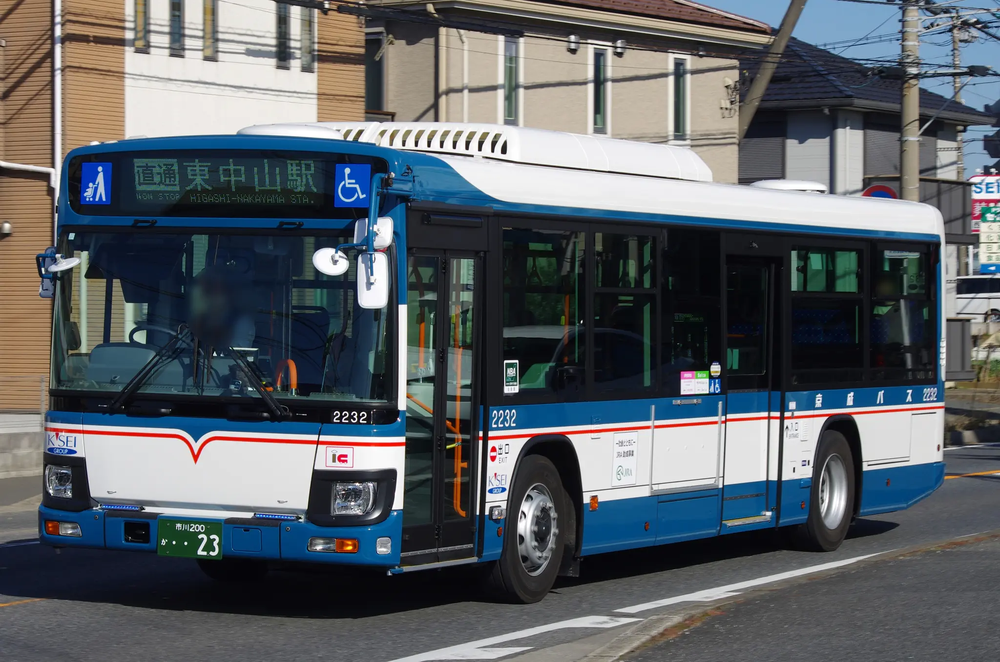

京成バス

競馬開催日に運行される中山競馬場と東中山駅を直通する臨時便
 新都心営業所の車両は独自のカモメ塗装をまとっている
新都心営業所の車両は独自のカモメ塗装をまとっている
 新都心・幕張線にて運行されている2代目連節バス「メルセデス・ベンツ・シターロ」
新都心・幕張線にて運行されている2代目連節バス「メルセデス・ベンツ・シターロ」
3代目連節バス「日野・ブルーリボンハイブリッド連節バス」
環七通りを走る特急に充当される電気バスBYD K8 2.0
京成バスシステム
京成バスの貸切バス事業等を分割して設立された。現在は船橋市内などを走る路線も運行している。
京成トランジットバス
東京ディズニーリゾート内の輸送を目的に設立された。現在は市川市南部を中心とした路線も運行している。
 市川駅と本八幡駅を結ぶ市川01系統
市川駅と本八幡駅を結ぶ市川01系統
ちばレインボーバス
京成バス船尾車庫と白井車庫の地域分社化により設立。千葉ニュータウン周辺を中心に、西船橋駅や津田沼駅まで乗り入れる長距離路線も運行している。
 新しく塗装された車両は水色が濃くなっている
新しく塗装された車両は水色が濃くなっている
 京成バス塗装のまま運行されている移籍車
京成バス塗装のまま運行されている移籍車
京成タウンバス
京成バス奥戸営業所の地域分社化により設立。東京都葛飾区を中心とした路線を運行している。
 東西線区間運休時の代行輸送に登板
東西線区間運休時の代行輸送に登板
千葉海浜交通
千葉県美浜区の海浜ニュータウンへの輸送を目的に設立された。
ちばシティバス
京成バス新宿車庫の地域分社化により設立。千葉市内の路線の運行を行っている。
千葉中央バス
千葉駅を主な起点として外房線沿線への路線を中心に運行している。
 千葉駅東口を出発する千葉営業所行き
千葉駅東口を出発する千葉営業所行き
東京BRT
東京都心と臨海副都心を結ぶBRT路線の運行を目的として設立された。2020年よりプレ運行が開始されている。
 燃料電池バス「SORA」が主力車両となっている。
燃料電池バス「SORA」が主力車両となっている。
 コミケ開催時に運行される直通特急。
コミケ開催時に運行される直通特急。
船橋新京成バス
新京成電鉄のバス事業を分社化して設立。同時に分社化された習志野新京成バスを後に吸収合併している。
 習志野営業所のオリジナル塗装
習志野営業所のオリジナル塗装
 新京成バス共通の新塗装
新京成バス共通の新塗装
 松戸新京成バスから移籍した2759号車
松戸新京成バスから移籍した2759号車
 松戸新京成バスからの移籍車だが、前面のみ習志野営業所のデザインに塗装されている2030号車
松戸新京成バスからの移籍車だが、前面のみ習志野営業所のデザインに塗装されている2030号車
松戸新京成バス
新京成電鉄のバス事業を分社化して設立された。
新京成電鉄をイメージした創立15周年記念特別塗装の3307号車